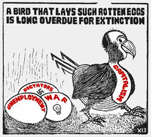

Strikes can be a Class Act
Submitted on Sun, 03/05/2006 - 10:26pm
By Gary Cox - Industrial Worker, March 2006
As I said in another column, my definition of “class” has evolved by slowly stripping away layers of exclusivity, a word I’ve grown to despise, and gluing on layers of inclusiveness. I say “glue on” because the glue doesn’t always hold. The process has often been a “two steps forward, then one backward” kind of thing for me. I keep trying because I believe that solidarity must be our goal if working people are to stand a chance in the class war being waged on us. However, it is very unlikely that many of us will be in exactly the same place at the same time on this one.
Good. I believe that if you and I agree on everything, one of us is either not being honest or we didn’t grasp the question. We have different life experiences, and we will see things from different perspectives. This makes for good, lively conversation. This conversation can even get heated, as long as we remember that when either of us is under attack by our common enemy, the bosses, it is in our self-interest as workers to defend one another. That is a “class act.”
The secret is being able to agree on whom or what is our “common enemy.” I have found that differences tend to take on too much importance when there is no meaningful struggle taking place. Those same differences tend to get resolved during struggle against a common enemy. The P-9 meat packers’ strike in the mid-’80s began to build universal support, but the issues became too clouded when this strike was sabotaged by the leadership of the AFL-CIO. There have been many heroic battles by labor, but the one struggle that came as close to a class struggle as anything I have witnessed was the strike called here in Colorado against the Adolph Coors Company in 1976. The very mention of this strike still causes both classes to bristle. My good friend and mentor, Carlos Cortez, continued to sport a big, blue “Boycott Coors” sticker on his refrigerator until he died last year.
Some of the following information comes from personal knowledge as a strong supporter of this strike, and from a long and continuing friendship with both Dave Sickler, business agent of Local 366, and Ken DeBey, vice-president of Local 366 during this strike. But much of the following material comes from the research done by Dan Baum, author of a very important book, Citizen Coors. This book is important because Dan exposes the thinking and actions of the extreme right that control our country at the dawn of the 21st century. Read it for the insight he loans to all working people. In this column, a little about the Coors family and the Coors’ brewery.
Adolph Coors was smitten with the idea of brewing beer as a young apprentice at the Wenker Brewery in Dortmund, Germany. The Kaiser was sacrificing Germany’s youth to his dreams of empire, so at the age of 21, Adolph became a stowaway aboard a ship bound for Baltimore. He worked and saved his way west. In 1872, he was riding the train from Chicago to Denver across plains covered with prairie grass, bison and free- roaming Indians. Denver was a 14-year-old city of 50,000 people, Colorado was not yet a state, and it would be four more years before Custer lost his curly golden locks at the Battle of Little Bighorn. In 1873, Adolph, with the financial help of a millionaire friend, bought an old tannery on the banks of Clear Creek near Golden, Colorado, bought a brewers kettle, and by 1874 he was brewing 800 gallons of very good beer per day. Sounds like a capitalist hero of Horatio Alger proportions. Maybe so.
Adolph was a driven man. He needed and received absolute control over the manufacturing plant, over his employees, and over his family. Adolph Sr., his son, Adolph Jr., his grandsons, William and Joseph, and most of his great-grandsons believed that there is a legitimate ruling class which is superior to most other men and all women, and that this is the natural order of things as proven by Darwin. Many of the Coors family are also born-again Christians so they don’t take Darwinian evolutionist theories quite back to chimpanzees, but they did brew Christian and Darwinian theories into an unhealthy cocktail that assumes, among other things, that some men are born to rule while most others are destined to serve. This was exposed for the dangerous illusion that it is when this authoritarian family became so obsessed with absolute control that it slipped into dysfunctional and self-defeating behavior.
All Coors women were expected to stay at home or become active in some charity organization. There was never any thought that they would have roles inside Coors businesses. All Coors males were expected to receive chemical engineering degrees from Cornell University, return to the Coors Brewery in Golden, and dedicate their lives to the family business at very modest salaries. They were expected to live in modest homes close to the Coors facilities and to drive modest automobiles. Most profits from the brewery and the porcelain plant went back into the businesses or into the Coors Family Trust. This enforced discipline in the family.
The only way to receive your share of the family wealth was to retire at the proper age from one of the family’s businesses. Most did as they were ordered and served their life sentences dutifully. Those who did not obey were ostracized from the Coors family and the Coors Family Trust. Most malcontents eventually saw the errors of their ways.
The right-wing concoction of Christian and Darwinian theories ensured that any attempt to interfere with the “natural order” (ruling class dominance) was seen by the Coors family as a subversive act that could upset the balance of nature. Groups that were trying to level the playing field – the NAACP, the ACLU, Chicano civil rights groups, women’s rights groups, gay rights groups, liberals in government, and especially labor unions – were dangerous to everything the family saw as the sacred order of their universe and must be brought to heel. Bill Coors once announced at a meeting with all company employees that democracy might be OK if a man’s vote were given equal weight to the amount of property he owned. Look around, Bill. Your wish has been fulfilled.
The Coors Brewery had always allowed unions in their facilities as long as they were loyal to the Coors family. Working people consumed most of the beer Coors sold and they wanted to maintain a “friendly to unions” public image.
That “friendly” attitude changed in 1956. Local 366 of the Brewery, Flour, Cereal and Soft Drink Workers International Union (try putting all that on your ball cap) had always been known as a “lapdog” local by the rest of Colorado’s organized labor. They were, above all else, extremely loyal to the Coors family and rarely was there any animosity between the union and the family. In return, the Coors family had always been fairly generous in paychecks to their mostly Aryan workers. Adolph believed that Aryan workers were not only the most loyal to management but also the best brewers in the world. None of the Coors males to follow Adolph Sr. had the courage to change any of his practices for fear of being struck down by his legendary wrath. That fear began when, as children, they would be marched in line on Sundays to face grandfather Adolph and receive punishment for all transgressions of the previous week.
The Coors family also owned the Coors Porcelain plant at the same location in Golden. During WW2, Coors had secretly produced a ceramic insulator for a plant in Oakridge, Tennessee which refined uranium-235 for the Hiroshima atom bomb. The workers at Coors Porcelain belonged to a different union, but when they called a strike in 1956 their picket line extended to the brewery. Local 366 had recently elected more radical leadership and when the porcelain workers struck, Local 366 would not cross their picket lines. For Bill and Joe Coors, this was class war. Local 366 had a good contract. They were being loyal, not to the Coors family but to another group of workers. They understood the implications of class loyalty and the strike was quickly settled. The Coors brothers quietly decided that their workers were no longer loyal employees, and that their unions had to go.
In January 1957, Bill and Joe Coors posted new “take it or leave it” work rules at the brewery. Local 366 could no longer have the union business agent on company property without permission, union bulletins were banned from Coors’ property, Coors would no longer collect union dues from workers’ checks, and the Adolph Coors Company would no longer hear union grievances.
In addition, Bill told the employees that if they went on strike, he would replace them with temporary workers. The brewery workers were stunned. In 1957, unions were at the peak of their power in the U.S. However, in a complicated labor case in 1938, the U.S. Supreme Court had put a huge crack in the Wagner Act by ruling that it was not “an unfair labor practice to replace the striking employees with others in an effort to carry on the business.” The Supreme Court had made replacing union employees with non-union workers legal. But few had the courage to test this crack while unions were so powerful and no union brewery had ever tried to replace striking workers before Bill Coors.
In March 1957 Local 366 went on strike. One week later, Coors began hiring replacements. Within three and one-half months, the strikers accepted defeat and those who had not been replaced went back to work. Bill added 22 additional rules that could result in immediate discharge to the ones listed above that had caused the strike, such as “conduct on company premises which violates the common decency or morality of the community” and, even more dangerous to the workers, “any words or deeds which would discourage any person from drinking Coors beer.” As the workers filed back into the plant, Bill Coors warned them, “I’ve got the big stick and I intend to use it.” In a later attempt to decertify the union, Bill Coors failed to force the union out, but for the time being Local 366 was a company-controlled union again.
This last rule, “any words or deeds which would discourage any person from drinking Coors beer,” reminds me of a story an Irish friend told me. A tourist from the states went into an Irish pub, “Give me a Coors.” “We don’t serve Coors in this pub sir.” “No, well bring me the closest thing you have to Coors beer then.” “One moment sir,” as he takes an empty glass into the john.
Joe got an “open shop” provision in the next contract at the porcelain plant which destroyed that union. Bill, now in charge of the brewery, and stuck with a union he despised, begins to amuse himself by ignoring all contract provisions, especially when visitors were present and especially if those visitors were Coors distributors. The Coors family disliked the distributors for flaunting their wealth while the Coors family could not and enjoyed bullying them as much as they enjoyed bullying the union.
In 1961, Bill posted a notice that all employees would be required to visit with a team of psychologists in order to help them with personal problems. All therapeutic conversations would be kept in confidence, Coors said. Of course that was a lie. All reports went to Bill Coors’ desk. As he slipped deeper into his paranoia about employee loyalty, Bill began experimenting with lie detectors. If we won’t buy barley without a thorough inspection, why should we hire employees without knowing what we are getting? was Bill’s reasoning. When contract talks opened next, Bill demanded pre-employment polygraph testing for all new hires. Local 366 weakly resisted, but their cajones hung on Bill Coors’ wall.
Lie detectors were used to screen out three types: thieves, radicals and homosexuals. The leading questions were: have you ever stolen anything; have you ever participated in “revolutionary activity” or knew anyone who did; are you a homosexual; how often do you have sex with your wife; did you have sex last night? Just normal stuff, right?
As Bill became more and more paranoid about the loyalty and sexuality of Coors employees, Joe became obsessed with the loyalty and sexuality of the entire nation. Joe Coors drifted more and more deeply into neo-fascist politics and began donating millions of Coors profits into extreme right-wing causes. He put up the first $250,000 as seed money to begin the first right-wing think tank, The Heritage Foundation. Many more Coors dollars were to follow for many more extreme right-wing groups. The success of this seed money can be viewed in Washington, D.C., in 2006 in the form of G. W. Slick if you have the stomach for it.
Then, in 1963, the security of the lie detector failed the Coors brothers. It was a failure that they would come to sadly regret in a few years. David Sickler, the 19-year-old son of a union carpenter and the most proud and fiery mother I have ever met, went to work at Coors. He was not an activist when he hired on. Dave just wanted to make enough money as fast as he could to buy a little place where he could raise and train horses. That fateful day that he went to work for Coors was to change Dave’s plans and the futures of the entire Coors family. In next month’s column, we’ll tell you how an inexperienced young worker with a fire in his belly can rally enough support to shake an empire.
To be continued